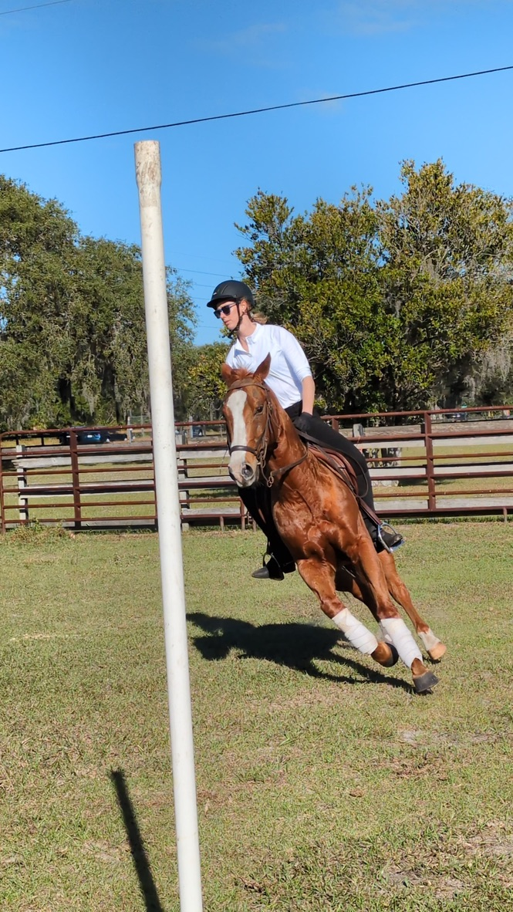
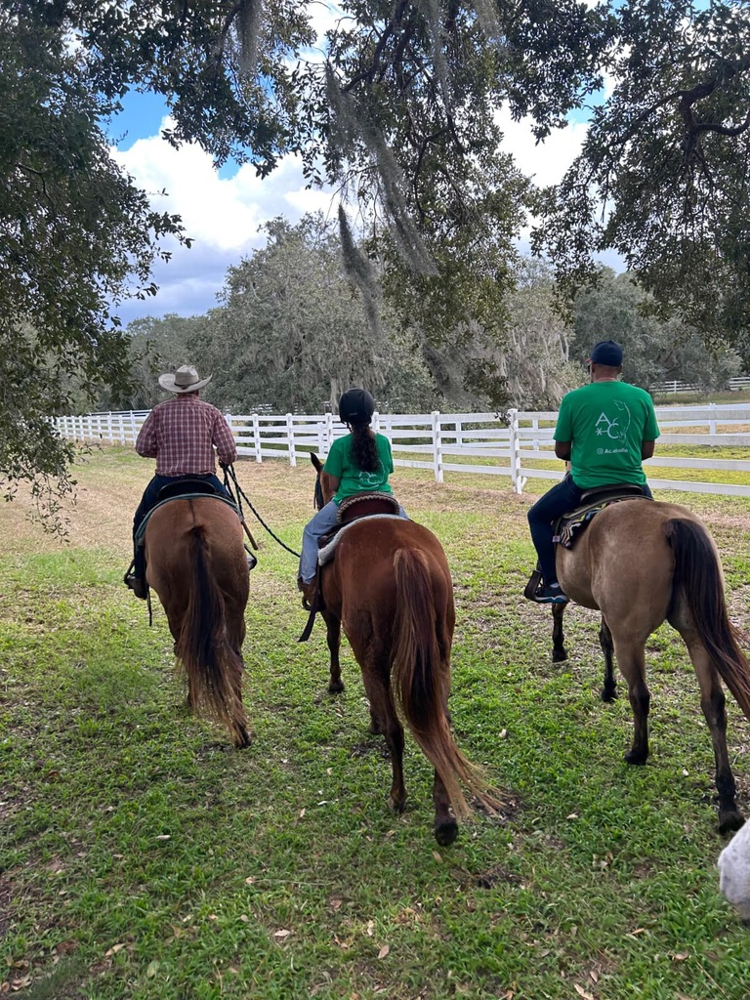
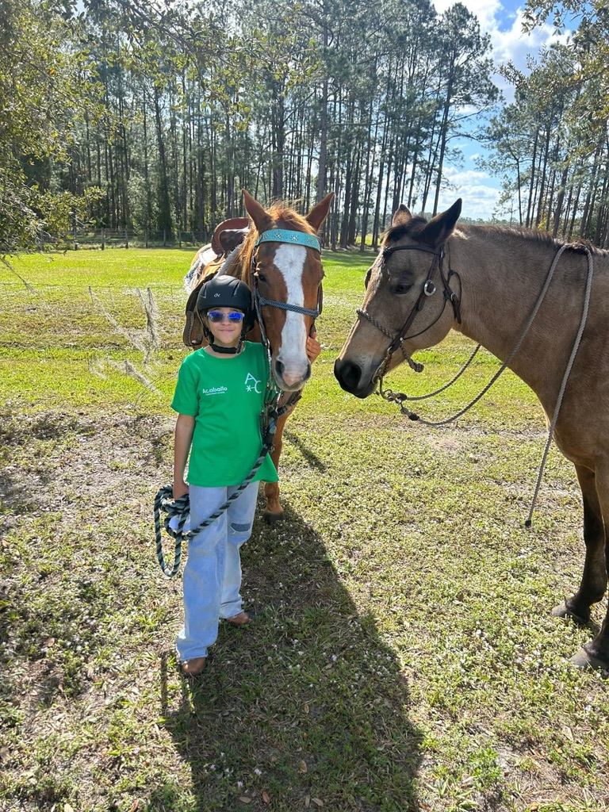

Programas y servicios
Programas para aprender técnica, construir confianza y desarrollar una relación real con el caballo. Cada experiencia se adapta al momento físico, emocional y energético de cada persona.
🐎 Clases regulares de equitación
- Monta Western y English
- Principiantes y niveles avanzados
- Enfoque en técnica, seguridad y confianza
- Equilibrio, postura y control emocional
Técnica con enfoque en calma, seguridad y presencia.
🤍 Horsemanship & Doma Racional
- Trabajo desde el suelo
- Comunicación consciente con el caballo
- Lectura del lenguaje corporal
- Formación del binomio caballo–jinete
La conexión se construye desde el suelo: comunicación consciente antes que control.
🌿 Interacciones con caballos
Experiencias guiadas de conexión para niños pequeños, para quienes no montan o para quienes buscan vínculo, calma y presencia. El caballo como regulador emocional y maestro silencioso.
🌈 Programas para niños y personas con condición
Sesiones personalizadas para autismo, déficit de atención y condiciones sensoriales o emocionales.
🐾 Cabalgatas
- Dentro del rancho
- Fuera del rancho (senderos/parques) — bajo cita previa
- Para niños, adultos y familias
🎉 Eventos y experiencias especiales
- Cumpleaños
- Actividades familiares
- Programas de bienestar
- Eventos privados
👶 Bebés (desde 11 meses)
Primera conexión, confianza y vínculo seguro.
🧒 Niños y adolescentes
Seguridad, técnica, autoestima y comunicación.
🧑 Adultos
Horsemanship, técnica y liderazgo consciente.
👨👩👧 Familias
Experiencias compartidas de conexión en manada.